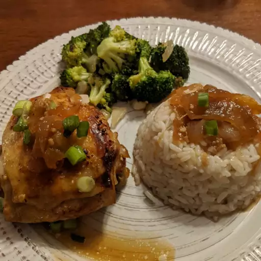

Hot Pot Chicken Adobo

This Instant Pot chicken adobo has all the Filipino flavor you love without hours of marinating. Serve over rice, if desired.
Ingredients
- ½ cup distilled white vinegar
- ¼ cup soy sauce
- 2 tablespoons minced garlic
- 1 tablespoon olive oil
- 1 tablespoon of brown sugar
- 1 teaspoon black peppercorns, roughly cracked
- 2 bay leaves
- 1 large onion, sliced
- 1 ½ pounds bone-in, skin-on chicken thighs
- 1 tablespoon chopped scallions
Steps
- Whisk together vinegar, soy sauce, garlic, olive oil, brown sugar, and crushed peppercorns in a medium bowl until sugar is dissolved. Stir in bay leaves.
- Line the bottom of a multi-functional pressure cooker (such as Instant Pot) with onion slices. Place chicken thighs over onion and pour vinegar mixture over the top. Close and lock the lid.
- Select high pressure according to manufacturer's instructions; set the timer for 10 minutes. Allow 10 minutes for pressure to build.
- Line a baking sheet with aluminum foil.
- Release pressure using the quick-release method according to manufacturer's instructions, about 5 minutes. Unlock and remove the lid. Using tongs, transfer chicken thighs to the prepared baking sheet, skin-side up. Select Sauté function and cook until sauce thickens, 3 to 5 minutes.
- Set an oven rack about 6 inches from the heat source and preheat the oven's broiler to high.
- Cook chicken under the preheated broiler until skin is crispy, 6 to 8 minutes. Transfer chicken to a serving plate and spoon sauce over the top. Garnish with scallions.